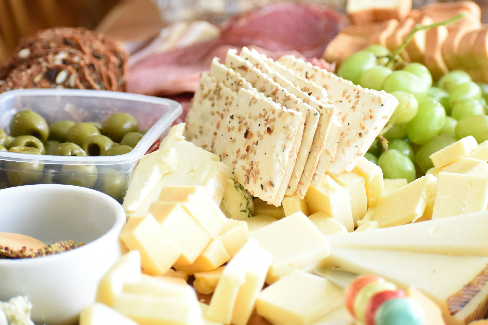

Cecinas Toledo es tu destino de confianza para productos frescos y de alta calidad. Desde 1970, hemos sido
una fiambrería familiar comprometida con la tradición y la excelencia en cada
producto que ofrecemos. Nos apasiona llevar a tu mesa los sabores auténticos y la calidad que solo la
tradición artesanal puede brindar. Con ingredientes seleccionados cuidadosamente y recetas transmitidas de
generación en generación, cada producto que sale de nuestras manos lleva consigo el amor y el compromiso que
nos caracteriza.

¿Sabemos algo del jamón?
El jamón, proveniente de la pierna trasera del cerdo, es una exquisitez culinaria apreciada en todo el mundo por su sabor distintivo y su textura delicada.

Los mejores cortafiambres para el hogar
Los cortafiambres son una herramienta indispensable en cualquier cocina doméstica permitiendo cortar fácilmente una variedad de alimentos.

El secreto del queso cheddar está en los microbios
El sabor único del queso cheddar se debe a la acción de los microbios durante la fermentación.